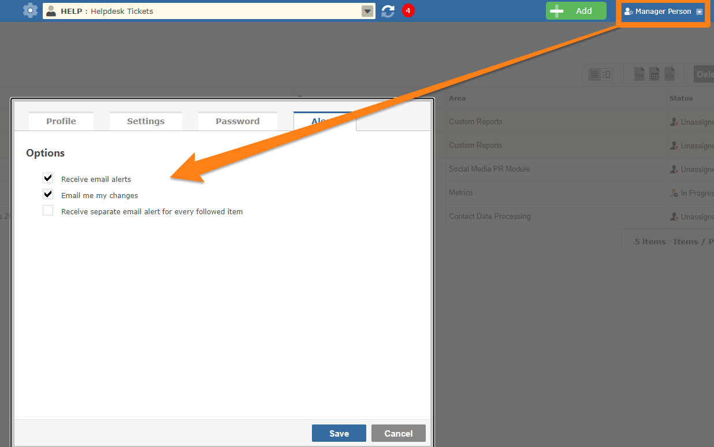

Every user can configure their preferences from their Profile page.

This setting can be un-checked to stop all email alerts.
This setting determines if you will receive email alerts for your own changes.